Poisette
Support
Kontakta oss
Mejla khangazun@gmail.com. Länken öppnar ett meddelande med en kort mall. Knappen Mejla utvecklaren i Inställningar ▸ Om fyller i din version och dina inställningar åt dig; på iPhone och iPad finns den i Inställningar, under Om.
Vanliga frågor
Vilka hörlurar fungerar?
De med huvudspårning: AirPods Pro (alla generationer), AirPods (tredje generationen eller senare), AirPods Max och Beats Fit Pro, anslutna till din Mac, iPhone eller iPad. Andra hörlurar rapporterar inte huvudets rörelser.
Poisette säger ”Sätt i dina AirPods”, men de sitter i.
Kontrollera i Bluetooth-menyn att de är anslutna till den här Macen (inte till din iPhone) och tryck sedan på Starta igen. Om du har stängt av åtkomsten till Rörelse och träning slår du på den igen i Systeminställningar ▸ Integritet och säkerhet ▸ Rörelse och träning. På iPhone och iPad kontrollerar du att de är anslutna till den enheten och tittar i Inställningar ▸ Integritet och säkerhet ▸ Rörelse och träning.
Den påminner mig för ofta, eller för sällan.
Kalibrera om medan du sitter som du vill sitta, och gör det valfria steget där du sjunker ihop. Du kan också välja Avslappnad, Balanserad eller Strikt, och en längre eller kortare respittid, i Inställningar ▸ Hållning på Macen, eller i Inställningar på iPhone och iPad.
Varför slutade den räkna?
Poisette vilar när dina hörlurar är urtagna eller ligger stilla på skrivbordet, när Macen är låst, under samtal, när en app är i helskärm, utanför dina aktiva timmar eller när den är pausad. Panelen visar vilket. På iPhone och iPad håller den bara koll under ett pass, och medan du är i en annan app eller skärmen är låst, bara medan passet spelar ett ljud.
Kan jag behålla min historik?
Ja: Inställningar ▸ Historik ▸ Exportera som CSV sparar varje bevakad timme som en kalkylbladsfil. På iPhone och iPad använder du Exportera som CSV på sidan Historik.